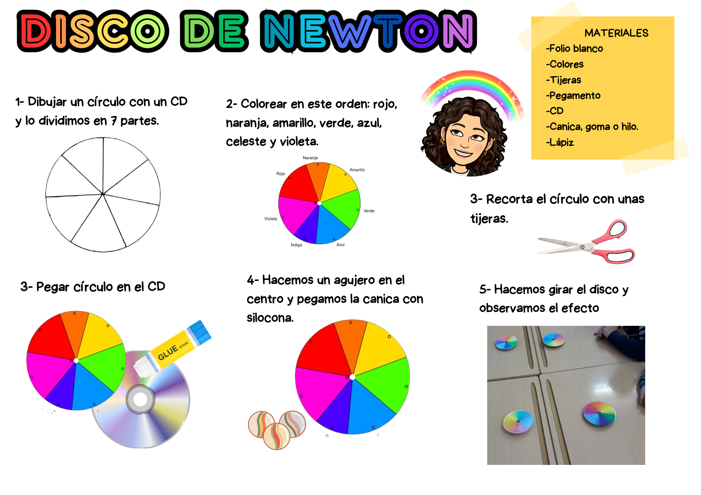

El Disco de Newton es un dispositivo que inventó Isaac Newton para demostrar que la luz blanca está formada por los colores del arco iris.
Pincha aquí para descargar la plantilla del Disco de Newton.
El Disco de Newton es un dispositivo que inventó Isaac Newton para demostrar que la luz blanca está formada por los colores del arco iris.
Pincha aquí para descargar la plantilla del Disco de Newton.

Obra publicada con Licencia Creative Commons Reconocimiento Compartir igual 4.0